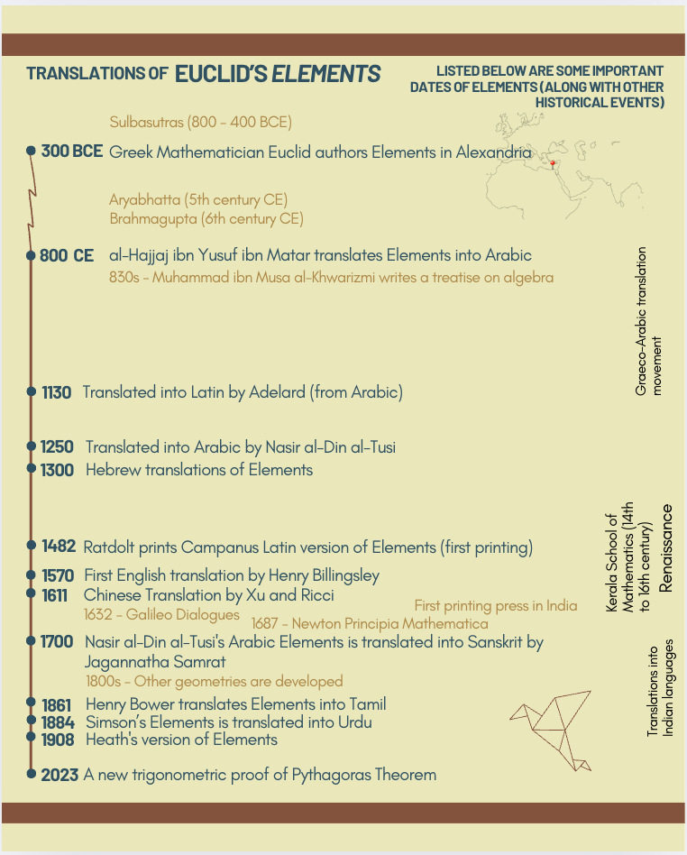

Research
I am interested in working in research related to science and math translations into Tamil.
Publications
Science Worksheets for Children in Regional Languages: A Translator’s Perspective
Uthra Dorairajan, Manikandan Sambasivam
In this article, we discuss observations from our experience translating science worksheets to Tamil for children. We look at issues where a translator needs to be cautious about the dialects and age- appropriate vocabulary, more so while translating to reach children.An Overview on Steps to Accelerate Science Communication in Tamil
Uthra Dorairajan, Manikandan Sambasivam
நான்கு சுவற்றுக்குள் ஒரு புத்தகத்தில் உள்ளதை அறிவியல் என்று கருதுவதைத் தாண்டி, அறிவுச்சார் இயலாக, தர்க்க ரீதியாகக் காரணங்களோடு இணைத்து நம் செயல்களை வகுக்கும்போது மட்டுமே அறிவுச்சார் சமூகமாக ஒரு தெளிவுடன் நாம் இயங்க முடியும். இன்றைய காலக்கட்டத்தில் அனைவரின் நலனுக்காக இது இன்றியமையாததும் கூட. இதற்கான உடனடித் தேவை தமிழில் அறிவியல் தொடர்பு.Euclid’s Elements in India
A poster presentation about Euclid's Elements in India. MTA Conference APU - 2024.
Elements is a pioneering mathematical treatise on geometry and number theory authored by Euclid. The book reached India in the 18th and 19th centuries and has been translated into several Indian languages. These translations remain inaccessible to the students and people interested in geometry.Euclid's Elements - Resources
I have been trying to find the translations of Euclid's Elements in Indian languages. You can find a list of resources related to this below. And also some interesting stuff related to the book.
